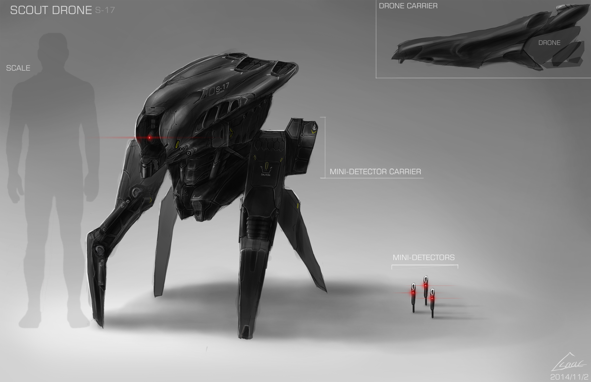
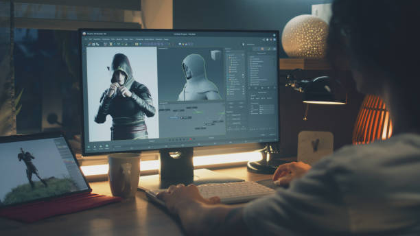

Art and Animation

Art gives a game its visual identity. Character design, environments, color choices, and interface design all shape the player's first impression. Animation adds movement and energy, making actions feel believable and responsive.
Artists may create concept sketches before building final assets. In many games, visual consistency is important because it helps the world feel complete and believable.

Common Visual Elements
- Concept sketches
- Character models or sprites
- Environment design
- User interface elements
Visual style helps players instantly understand the mood and tone of a game.